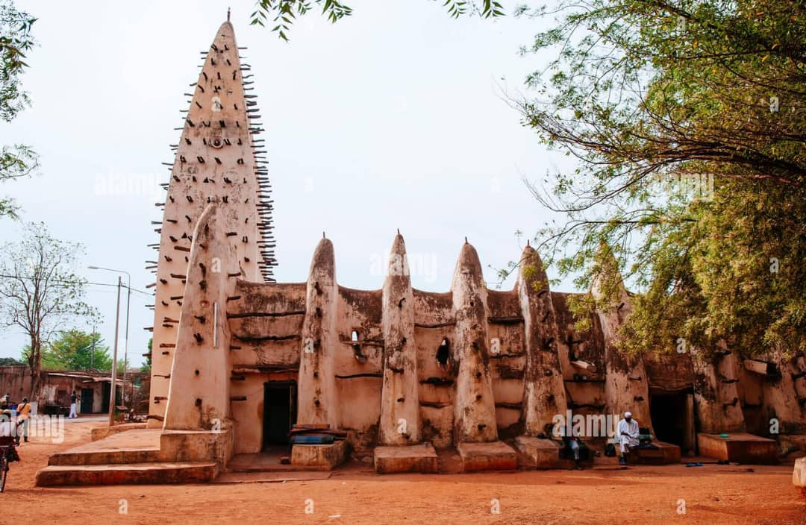
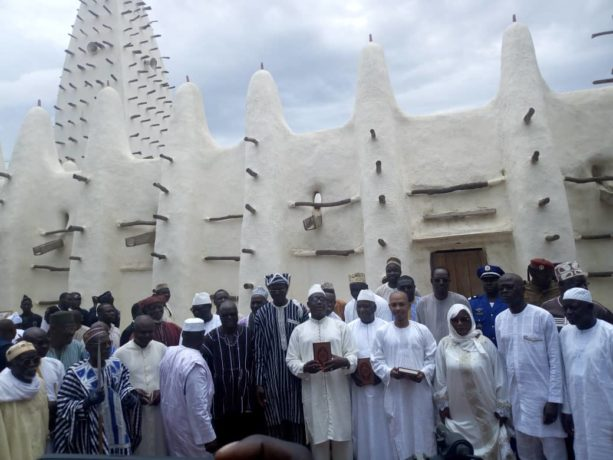

La Vielle Mosquee de Dioulassoba


DESCRIPTION
Construite vers 1880, cette mosquée est un exemple remarquable de
l'architecture soudanaise, avec ses murs en banco et ses minarets
en forme de pain de sucre. Elle est l'un des édifices religieux
les plus anciens de la ville.
HISTORIQUE
Construction : Vers la fin du XIXe siècle (vers 1880–1890).
Fondateur : Le chef religieux El Hadj Lassina Sanou,
avec l’appui du roi local.
Architecture : Style soudano-sahélien(murs en banco,bois de rônier apparent).
Rôle historique : Lieu de prière pour les Dioula musulmans de Bobo ;
c’est l’un des plus anciens bâtiments de la ville.
Symbolique : Représente la tolérance religieuse entre musulmans,
animistes et chrétiens à Bobo.
Toujours en activité et classée comme patrimoine historique et culturel.
Revenir en arrière: